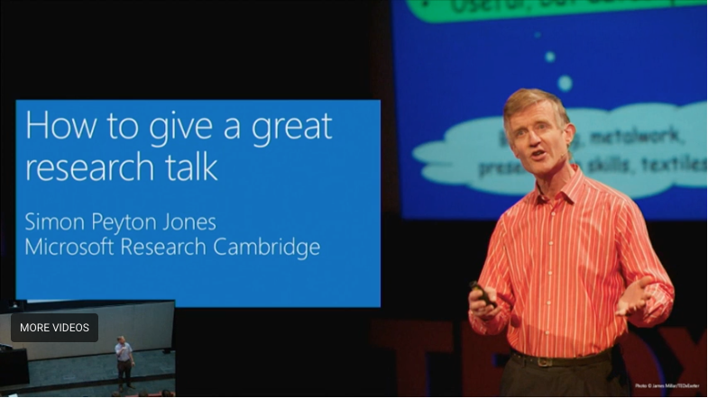
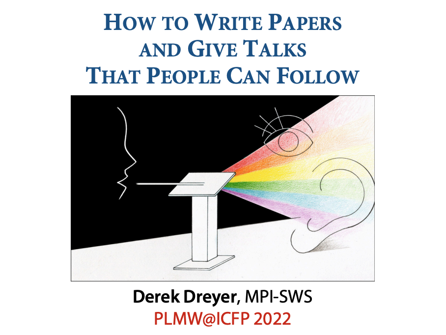
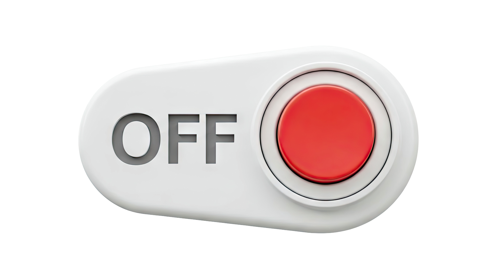
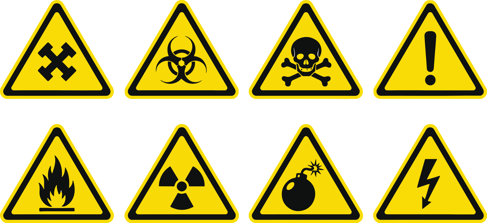

How to Give a Good Talk
A Guide for Security Engineers
Michael Hicks · Penn CIS · CIS 7000 · Spring 2026
Welcome everyone. Today we're going to talk about something that doesn't get enough attention in security engineering: how to give a talk that actually changes what people do. And we're going to practice what we preach — I'll use a running example throughout to show how each principle works in practice.
Roadmap
Foundations — Why giving a good talk mattersStructure — Designing your talkSlides — Your visual aid, not your scriptDelivery — Bringing it to lifeSecurity-Specific — Special considerationsProcess — Putting the talk together
Running example: A security talk about the 2013 Target data breach
Here's where we're going today. Six parts. And throughout, we'll use a running example: imagine you're a security engineer who needs to give a talk about the Target data breach to get your company to invest in better defenses. We'll see how each principle applies to that real scenario.
Part 1
Foundations: Why This Matters
A talk is your opportunity to influence behavior
Foundations
Structure
Slides
Delivery
Security
Process
Let's start with why this matters. Why should you, as a security engineer, care about giving good presentations?
Every Talk Has a Purpose
Your purpose is not to inform — it's to change behavior . How?
"If it's original, you will have to ram it down their throats."
— Howard Aiken
"Original" = anything that challenges the status quo.
A great talk is how you do the ramming .
This is the most important idea in Part 1. Your talk is not a data dump. You're not there just to inform. You're there to change what people do — how they think, what they prioritize, what actions they take. If nothing changes after your talk, it failed.
Howard Aiken, the pioneer behind the Harvard Mark I, said this — and Ranjit Jhala highlights it in his advice on giving talks. "Original" here doesn't mean novel or creative in the artistic sense. It means anything that asks your audience to change what they currently do or believe. A new tool they should adopt. A new process. A different set of priorities. The more your recommendation departs from the status quo, the more resistance you'll face — and the better your talk needs to be to overcome it.
Your audience grants you something priceless when they sit down: their time and their attention. You owe it to them to make it count. A great talk is how you take advantage of that gift.
The Stakes Are High
Security is rarely the primary motivation of your audience.
They're thinking about features, deadlines, revenue, headcount...
Your talk may be your best chance to change that.
When you walk into a room to give a security talk, your audience is not thinking about security. They're thinking about their sprint deadlines, their feature backlog, their next meeting. Security competes for attention with everything else — and it usually loses. Acknowledging this reality builds immediate credibility with your audience.
This is why giving a great talk matters so much for security engineers specifically. You may only get 30 minutes with the decision-makers. That's your window to shift their priorities. Don't waste it.
Our Running Example Example
The scenario: It's January 2014. The Target data breach just made headlines.
You are: A Security Architect at a mid-size retail company.
Your audience: CTO, VP Engineering, VP Finance, 3 Dev Team Leads.
Your task: Get budget approved for network segmentation and vendor access controls.
Let me introduce our running example. We'll use this throughout the talk to make every principle concrete. Imagine it's January 2014. The Target data breach has just been disclosed — 40 million credit cards stolen. You're a security architect at a mid-size retailer. You need to give a talk to your company's leadership to get budget approved for network segmentation and vendor access controls. Let's see how each principle we discuss applies to this scenario.
Know Your Goal
"If the audience remembers only one thing from your talk, what should it be?"
— Simon Peyton Jones

Simon Peyton Jones, one of the creators of Haskell, gives legendary talks about how to give talks. His key question: if the audience walks out remembering only ONE thing, what should it be?
Common Goals for Security Talks
Getting budget approved for a security initiative
Changing development practices or policies
Building awareness of a specific threat
Gaining support for risk mitigation measures
State your goal explicitly — even to yourself — before creating a single slide.
For security engineers, goals usually fall into one of these categories. Notice they're all about getting someone to DO something. They're not about conveying information for its own sake. Write your goal down before you start building slides. One sentence.
Our Goal Example
"Get the CTO and VP Finance to approve $2M for network segmentation and vendor access controls before Q2."
Not "educate leadership about the Target breach."action by specific people by a specific date .
For our running example, here's the goal. Not "educate leadership about the Target breach" — that's informing, not behavior change. Not "raise awareness" — that's vague. Instead: get the CTO and VP Finance to approve $2M for network segmentation and vendor access controls before Q2. Specific action, specific people, specific timeline.
Know Your Audience
A talk aimed at everyone reaches no one .
Customize ruthlessly.
Next foundation: know who you're talking to. If you try to speak to everyone equally, you'll reach nobody effectively. Look at the difference: a room full of people is an opportunity, but if you haven't tailored your message, that's what you get — disengagement.
What Technical Leaders Want
Specifics
Evidence
Feasibility
Technical leaders — dev team leads, principal engineers, architects — want three things:
Specifics: What vulnerabilities are we talking about? What code changes are needed? What tools do we need?
Evidence: Show me the data. Give me demonstrations. Give me concrete examples, not hand-waving.
Feasibility: Can we actually implement this given our current stack, timeline, and team capacity?
What Management Leaders Want
Management leaders care about four things:
Business impact: What does this mean for revenue, reputation, and compliance? They don't care about CVE numbers; they care about dollars.
Cost-benefit: What does it cost to fix vs. the cost of the risk? Give them a clear comparison.
Options: What are our choices? What do you recommend? Executives want to make decisions, not just receive information.
Confidence: Can we trust you know what you're talking about? Your credibility matters as much as your data.
Example: Same Topic, Different Audiences Example
VP Engineering wants to hear:
"Target's network was flat — attackers pivoted from HVAC vendor to POS systems. Our network has the same architecture. Here's a segmentation plan with a 6-month rollout."
VP Finance wants to hear:
"Target's breach cost $300M+. We process $50M in card transactions. A $2M investment in network segmentation reduces our exposure by an estimated 80%."
Same breach. Same recommendation. Different framing.
Look at how the same topic plays differently for different audiences. The VP Engineering wants to know: what's technically wrong and how do we fix it? The VP Finance wants to know: what's the financial exposure and what's the ROI of fixing it? Same breach, same recommendation, completely different framing. This is what it means to know your audience.
The Mixed-Audience Challenge
Start with business impact (for management)
Layer in technical detail (for technical leads)
Have deep-dive backup ready (for experts who ask)
Use analogies for the non-technical:
"Think of it like a lock on a door..."
Translate jargon in real-time:
"The firewall — think of it as a security guard checking IDs..."
For mixed audiences: start with business impact, layer in technical detail, have deep-dive backup. Use analogies and translate jargon.
Example: Before & After Example
A visual the whole room can understand
Before: Flat network
All on one network
HVAC Vendor
Email Server
Corp Apps
POS Systems
Database
Card Data
Vendor → POS → Card Data
After: Segmented network
VENDOR ZONE
HVAC Vendor
BLOCKED
CORPORATE ZONE
Email
Corp Apps
PAYMENT ZONE (isolated)
POS Systems
Card Data
No lateral movement possible
Here's a before-and-after that the whole room can understand — engineers and executives alike. On the left: a flat network where the HVAC vendor can reach the POS systems and card data. Red lines show the attack path. On the right: a segmented network with isolated zones. The vendor zone can't reach the payment zone. No lateral movement possible. This single visual makes the case for network segmentation more persuasively than any amount of text.
Part 2
Structure: Designing Your Talk
Lead with the punchline, not the setup
Foundations
Structure
Slides
Delivery
Security
Process
Now that we know why talks matter and who we're talking to, let's talk about how to structure the content itself.
A Talk Is Not a Mystery Story
Anti-pattern
"First let me explain the attack...
Half the audience checks out before the punchline.
Better
"We need to implement X
Lead with the claim. Then support it.
Technical people instinctively want to "build up" to their conclusion. But this loses audiences. Lead with your claim, then back it up.
Example: Don't Bury the Lede Example
Mystery story version
"Let me walk you through how Target was breached. First, Fazio Mechanical, an HVAC vendor, received a phishing email. Then the attackers used those credentials to access Target's network. The network was flat, so they could reach the POS systems. They installed RAM-scraping malware. 40 million cards were stolen. Now, our network is also flat..."
20 minutes in and the CFO still doesn't know what you're asking for.
Claim-first version
"We need $2M for network segmentation to prevent a Target-style breach. Target lost $300M because their network was flat — attackers moved freely from an HVAC vendor to payment systems. Our network has the same vulnerability. Here's the plan, and here's the evidence it works."
30 seconds in, everyone knows what you want and why.
Here's what the difference looks like for our Target example. In the mystery story version, you spend 20 minutes building up before the CFO even knows what you're asking for. In the claim-first version, everyone knows within 30 seconds: you want $2M, and a real-world catastrophe is the motivation. The rest of the talk is evidence.
The Overall Structure
Give them a roadmap, then take them on the journey
Opening Hook (1–2 min): Why should they care right now ?Problem & Solution Teaser (2–3 min): What's at stake & your recommendationProblem in Depth (5–8 min): Evidence the problem is real & urgentSolution in Depth (10–15 min): How it works, with examplesEvidence / Results (3–5 min): Data, case studies, demosCall to Action & Summary (2–3 min): What you want them to do
Here's a recommended overall structure for a typical 30-40 minute security talk. Notice you tease your punchline in step 2, then spend the rest backing it up.
V-Shaped Complexity
From Ranjit Jhala
High Level
Accessible
to everyone
Technical Depth
High Level
Summary &
implications
People who "tuned out"
can rejoin here
Ranjit Jhala describes V-shaped complexity. Start at a high level that's accessible to everyone. Gradually descend into technical detail. Then come back up to a high level for your summary and implications. This way, even people who tune out during the technical middle can rejoin at the end and still walk away with the key message.
Onion, Not Clew
From Herman Haverkort
Clew (Linear)
A
→
B
→
C
→
D
→
Conclusion
Miss one step → you're lost
Onion (Layered)
Each layer adds depth; core always visible
Haverkort distinguishes between a "clew" — a linear chain where missing one step loses you — and an "onion" — core message first, then layers of depth. With an onion, even if someone dozes off, they can rejoin and understand the core.
Common pattern: CGI
From Derek Dreyer
Context
Set the stage
→
Gap
The problem & why
→
Innovation
Your solution

Derek Dreyer describes this as the CGI model. Context, Gap, Innovation. Notice the claim — your solution — comes early.
CGI for Target Talk Example
Context
"Target was breached in December 2013. 40 million cards stolen. $300M+ in costs. CEO and CIO resigned."
Gap
"Our network has the same flat architecture. Vendor access is uncontrolled. We have no segmentation between corporate and payment systems."
Innovation
"Network segmentation + vendor access controls. $2M investment. 6-month rollout. Reduces exposure by ~80%."
Here's CGI applied to our Target talk. Context: the breach happened, here are the headlines. Gap: our network has the same vulnerability — a flat architecture with no segmentation. Innovation: network segmentation and vendor access controls, for $2M, deployed in 6 months. Notice how quickly the audience understands both the problem and the solution.
What to Include — and Cut
Ruthlessly prune anything that doesn't serve your goal.
For each piece of content: "Does this serve my goal? Does my audience need this?"
If tangential but important: "For details, see the appendix/report"
Have backup slides for Q&A — content you cut but might need
For every piece of content, ask: does this serve my goal? Does my audience need this? If not, cut it. Keep backup slides for Q&A.
For Security Specifically
Lead with business impact , not technical details
Use data when you have it; be honest about uncertainty when you don't
Present stackable options : "We could do A, or A+B, or A+B+C"
Reframe: "This investment protects $X million in revenue" not "We might get hacked"
When structuring security content: lead with business impact, use data, present stackable options, and frame as opportunity rather than fear.
Part 3
Slides: Your Visual Aid, Not Your Script
If your slides make sense without you, they have too much text
Foundations
Structure
Slides
Delivery
Security
Process
Now let's talk about the slides themselves. This is where most talks go wrong.
Slides Support, Not Replace
If you can read your slides verbatim,
they have too much text .
Think about the typical talk: a speaker next to a text-heavy slide, reading it aloud. The audience is trying to read AND listen simultaneously, which means they're doing neither well.
Pictures Over Text
Express ideas visually whenever possible.
The "Thrice Told" principle:
Written
+
Uttered
+
Illustrated
Key ideas should appear in all three channels.
The "Thrice Told" principle says key points should reach the audience three ways: written briefly, spoken by you, and illustrated visually. This reinforcement is how ideas stick.
Bad Slide Example
Target Data Breach: Background and Analysis
In December 2013, Target Corporation disclosed a major security breach
Attackers gained access through Fazio Mechanical Services, a third-party HVAC vendor, using stolen credentials obtained via a phishing email
The attackers exploited Target's flat network architecture to move laterally from the vendor portal to payment card processing systems
RAM-scraping malware was installed on POS terminals across 1,797 stores
Approximately 40 million credit and debit card numbers were compromised, along with 70 million customer records containing personal information
Total estimated cost to Target: $300M+ including settlements, fines, remediation, and lost business
Target's CEO Gregg Steinhafel and CIO Beth Jacob both resigned
FireEye security tools detected the breach but alerts were ignored
Every word is accurate. Nobody will read it.
Here's a bad slide about the Target breach. Every fact is correct. And nobody in the audience will read it. They can't read AND listen to you simultaneously. This slide is a document pretending to be a visual aid.
Good Slide Example
The chain of attack
You tell the story. The diagram anchors their understanding.
Here's the same information as a visual — an animated attack flow diagram. Each step appears as YOU narrate it. "It started with a phishing email..." click. "That gave the attackers vendor credentials..." click. The audience is looking at the picture while listening to you, and the two reinforce each other. This is the thrice-told principle in action. After walking through the full chain, the takeaway appears: YOU tell the story, the diagram anchors understanding. Compare this to the wall-of-text version — same facts, completely different impact.
Visual Tools for Security Talks
Architecture diagrams
Attack flow visualizations
Dashboard screenshots
Before/after comparisons
Risk heat maps
Timeline diagrams
For security talks, you have great visual tools available. Architecture diagrams, attack flows, dashboards, before/after comparisons, risk heat maps, timelines. A single clear diagram beats a page of bullet points.
Sometimes Text Is Okay
Slide titles — alwaysKey statistics or quotes — occasionallyBrief labels on diagramsOne-sentence summary of a key point(Unfortunately:) When you don't have time to do better!
But never too many bullet-heavy slides in a row.
Text isn't forbidden — it's a last resort. Titles, key quotes, brief labels, one-sentence summaries. But be deliberate about it.
Slide Titles Example
The title is often the most important text on the slide.
Generic label
"Security Incident Review"
Key point as title
"We're Vulnerable to the Same Attack That Cost Target $300M"
Look at these two titles. "Security Incident Review" tells you nothing. "We're Vulnerable to the Same Attack That Cost Target $300M" tells you the key point before you even look at the rest of the slide. The Monkey Test: if someone flipped through your slides silently, could they follow the argument from titles and visuals alone?
One Point, One Slide
Each slide should make exactly one point .
If it has two points, make two slides.
Each slide: exactly one point. Complex slides overwhelm. Break them into pieces
Too Many Points Example
5 malware variants flagged
Bangalore
→
Minneapolis
→
No action

Auto-delete was off
Three points crammed into one slide. Everything is too small to read.
Here's one slide trying to tell the whole detection failure story at once. You can see the problem immediately — everything is tiny, cramped, and competing for attention. There are actually three distinct points here: the tools worked, the people failed, and a policy choice made it worse. Crammed together, the narrative arc is lost and nothing has impact. Let's split this into three slides instead.
Point 1: The Tools Worked Example
Five malware variants flagged. Server addresses identified.
Target had spent $1.6 million on FireEye — the same malware detection system used by the CIA and the Pentagon. On November 30, 2013, it did exactly what it was designed to do. It detected the malware and raised alerts. Five different variants. It even identified the staging server addresses. The hackers had accidentally left their own credentials in the malware code. Detection was NOT the problem. One slide, one point: the tools worked.
Point 2: The People Didn't Example
Bangalore saw alerts
→
Minneapolis escalated to
→
No action "not warranted"
Target had a security operations center in Bangalore monitoring 24/7. They saw the FireEye alerts and did the right thing — they escalated to headquarters in Minneapolis. Minneapolis reviewed them and decided the generic label "malware.binary" didn't warrant immediate follow-up. FireEye was new, the alert name was vague, and there were lots of other alerts competing for attention. The data continued flowing to Russia for two more weeks. One slide, one point: the people failed.
Point 3: Auto-Delete Was Off Example
FireEye could have automatically deleted the malware.
That feature was turned off.
FireEye had the ability to automatically quarantine and delete detected malware without any human intervention. Target's team had turned that feature off. They didn't trust the new system enough to let it act on its own — a reasonable and common choice for newly deployed security tools. But it turned a detected intrusion into a $300 million breach. Now look at what we just did: three slides, three points, one clear narrative arc. The technology worked. The people failed. A policy decision made it all preventable. That story is completely lost when you cram nine bullets onto one slide. This IS the "one point, one slide" principle.
Flow and Coherence
Slides should flow like sentences in a paragraph. Narrative.
Within slides
Between slides
Transitions
Your slides need to flow.
Within each slide, go from what's known to what's new.
Each slide should clearly connect to the previous and next
Plan your transitions. Don't just flip and say "So..."
Animation: Principles
Use builds to reveal information incrementally
Effective: revealing parts of a diagram step by step
Animation should guide attention , not decorate
Use animation to reveal information step by step — like building up a diagram. Keep elements stable between builds. Animation guides the eye, not decorates. And yes — revealing bullet points one by one is generally annoying. But revealing parts of a diagram is genuinely helpful. We're using that principle in this very presentation.
Formatting Essentials
Font size: Min 28–30pt body.
Font type: Sans-serif only
Colors: Dark on light OR light on dark
No clutter: Remove logos, decorations, unnecessary graphics
Match backgrounds: If including a diagram, ensure its background matches your slide
Formatting fundamentals. 28-30 point minimum. Sans-serif fonts. Choose dark-on-light or light-on-dark and stick with it. Remove all clutter. Match diagram backgrounds.
The Last Slide Matters
Never: just "Thank You!" or "Questions?"
Instead: Summary of key points + your call to action
This slide stays up during Q&A — make it work for you.
Include pointers to more information if relevant.
Your last slide stays on screen during Q&A. Never waste it on "Thank You." Reinforce your key points and call to action.
Part 4
Delivery: Bringing It to Life
No substitute for practice
Foundations
Structure
Slides
Delivery
Security
Process
We've covered what to say and how to design your slides. Now: how to deliver.
"Your most potent weapon is your enthusiasm."
— Simon Peyton Jones
If you don't seem excited,they be?
Your enthusiasm is your most potent weapon. The room will adopt your energy level.
Practice Is Non-Negotiable
Practice out loud — not just reading in your headMemorize the first few slides — then roll into natural deliveryTime yourself — and cut ruthlessly if over
No shortcut for practice. Explain your talk to a colleague first. Practice out loud. Memorize the opening. Time yourself.
Practice Techniques
Give at least one practice talk to real people
Video yourself to catch tics and awkward momentsFor high-stakes talks: multiple practice runs to different audiences
"Write your slides the night before — freshness matters."
— Simon Peyton Jones
Give at least one practice talk to real people. Video yourself. For important talks, multiple practice runs. And polish your slides close to the event — freshness matters.
Delivery Do's and Don'ts
Don't
Read from your slides
Do
Face the audience, not the screen
Face the audience. Make eye contact. Stand and move purposefully. Use your hands. Never read your slides. Never apologize for your preparation.
Managing Nerves
The "jelly effect" — weak legs, tight chest — is universal.
It doesn't mean you're not ready.
Deep breathing before you start
Move around and use large gestures — physical activity releases tension
Nerves are universal. Deep breathing helps. Moving releases tension. And script your opening word-for-word so you can start on autopilot while your brain catches up.
Verbal Signposts
Help your audience track the narrative.
"So we've covered the threat landscape. Now let's talk about solutions."
"Here's the most important point..."
"If you remember nothing else from today..."
"So the key takeaway is X. Now let's look at Y."
Use verbal signposts. Tell people where you are. Flag key moments explicitly.
Pause Between Ideas
Vary your pace — slow down for important points.
Silence is one of the most powerful tools you have. Pause before a key point and let the audience catch up. Vary your pace — slow down for the things you want to stick. Rushing signals nervousness; pausing signals confidence.
Handling Questions
Questions are opportunities , not threats.
Repeat the question back
"I don't know" is always okay
Have backup slides ready
Don't get defensive
Questions are engagement, not attacks. Repeat every question back — it buys you time to think and ensures you understood correctly. It's always okay to say "I don't know" or "That's outside the scope of this talk." Have backup slides ready for predictable questions — this shows preparation and depth. Don't get defensive — most challenging questions come from genuine curiosity, not hostility. For mixed audiences, bridge between technical and non-technical in your answers: give the short business answer, then the technical detail.
Encouraging Questions
Pause at natural breaks and invite questions
Acknowledge that "basic" questions are welcome
Create safe spaces:"This is complex — what questions can I clarify?"
Actively invite questions. "What can I clarify?" is better than "Any questions?"
Part 5
Special Considerations for Security Engineers
Security enables the business — it doesn't block it
Foundations
Structure
Slides
Delivery
Security
Process
Everything so far applies to any talk. Now what's specific to security engineers.
Frame as Opportunity, Not FUD
Fear
"We might get hacked like Target."

Opportunity
"A $2M investment protects our $50M in card transactions."
The biggest trap in security communication: FUD — fear, uncertainty, doubt. "We might get hacked like Target" is vague and feels manipulative. "A $2M investment protects our $50M in card transactions" gives them a concrete business case. Frame security as a business opportunity, not a scare tactic.
Speak the Language of Business
Risk = Likelihood × Harm
Benefit = Risk Reduced − Costs
Use data when possible — but be honest about uncertainty
"We estimate..." not "This will..."
Speak the language of risk and return. Risk is likelihood times harm. Benefit is risk reduced minus costs. Be honest about uncertainty.
Example: The Business Case Example
Cost of a breach
$50M+
Based on Target's $300M at 6x our scale
Cost of prevention
$2M
Network segmentation + vendor controls
Risk reduction
~80%
Estimated exposure reduction
This is a slide a CFO can act on.
Here's what a business case slide looks like for our Target example. Three numbers, three boxes. Cost of a breach: $50M+. Cost of prevention: $2M. Risk reduction: approximately 80%. This is a slide a CFO can act on. Compare this to the wall-of-text slide we saw earlier — same underlying data, completely different impact.
Security Communication Principles
Never let a crisis go to waste: When incidents happen, use them to advocate for improvements
There is no perfect security: Present risk reduction , not elimination. Be honest about trade-offs.
Right things, easy things: Are we protecting the right assets? Are we making secure behavior easy?
Three principles. Use incidents as opportunities. Never promise perfect security. And always ask: are we protecting the right things, and are we making the secure path easy?
Building Trust
You're building trust , not winning arguments.
Present trade-offs fairly , even when you have a clear recommendationBe transparent about limitations and uncertainties
Trust your audience's judgment — give options, let them choose
Your goal is trust, not winning. Be neutral, transparent, and fair about trade-offs.
Part 6
The Process: Putting The Talk Together
Figure out what to say before you open your slide editor
Foundations
Structure
Slides
Delivery
Security
Process
Home stretch. Let's put it all together into a practical process.
"Figure out what you are going to say first, in increasing detail, then set out to make the slides."
— Michael Hicks
The most common mistake: opening PowerPoint first. Don't. Figure out what you want to say first.
The Six-Step Process
Step 1: Write your goal in one sentenceStep 2: List your key landmarks/points (outline)Step 3: For each point, decide how to support it (example, data, diagram)Step 4: Sketch placeholder slides with titles and notesStep 5: Now open your slide editor and build the real slides Step 6: Review — can you cut 20%? You probably should.
Six steps. Goal. Landmarks. Support for each. Placeholder sketches. Build real slides. Cut 20%.
Iterative Refinement
Start with bullet lists, then ask:"Can I say this with less text? Can I use an illustration?"
This naturally leads to the "thrice told" principle
Idea: design the last slide of each section first ,
Hicks: How to Write a Conference Talk ·
Jhala: An Opinionated Talk on Preparing Good Talks (PDF)
Iterate. Start with bullets, then challenge: can I use less text? An illustration? Design the last slide of each section first, then work backward.
Before You Present: Checklist
I can state my one key message in a single sentence
I know what behavior change I want from my audience
Each slide makes exactly one point
My slides have minimal text; ideas are illustrated visually
My slide titles emphasize key points, not generic labels
I've practiced out loud at least twice
I've timed myself and I'm under the time limit
My final slide summarizes key points and my call to action
I have backup slides for likely questions
Run through this checklist before every talk. If you can check all nine, you're ready.
Key Takeaways
1. Have a goal
2. Know your audience
3. Structure for success
4. Slides support, not replace
5. Deliver with energy
6. Build trust
Six key takeaways. Have a goal. Know your audience. Structure for success. Let slides support you. Deliver with energy. Build trust.
Resources
Here are the references. I especially recommend Peyton Jones and Shewchuk.